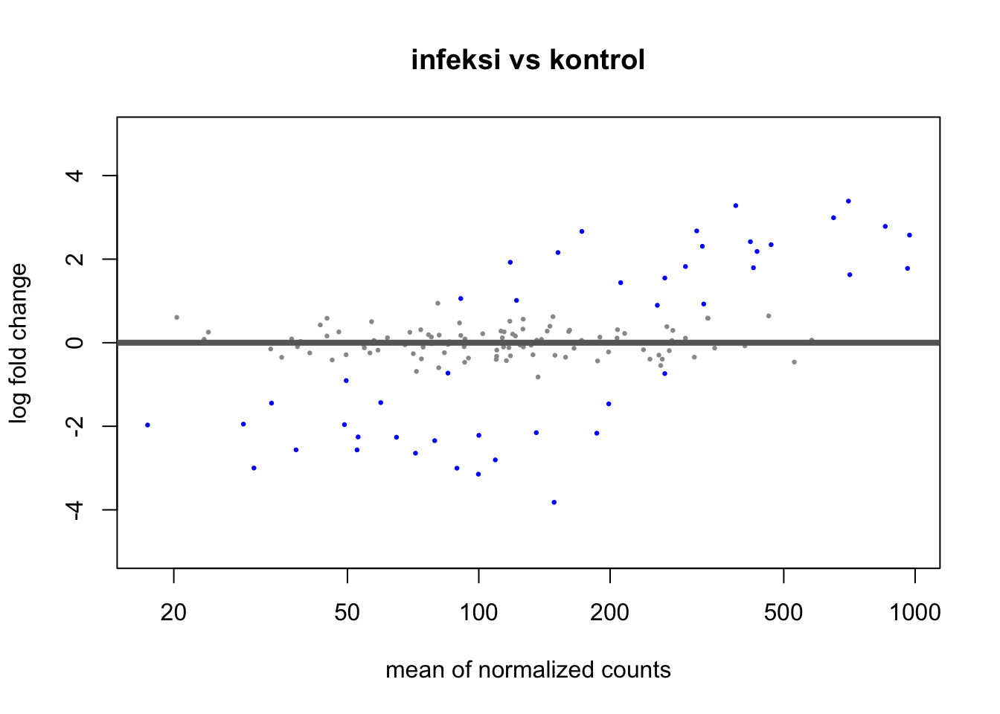
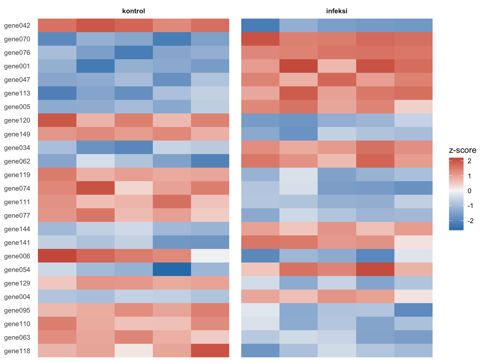

Catatan. Seluruh tutorial ini dapat dijalankan langsung di komputer biasa karena memakai data demo berukuran kecil. Kita memakai Bash untuk tahap alignment dan kuantifikasi, lalu R untuk analisis ekspresi diferensial, dan Anda dapat memakai VS Code untuk mengedit serta menjalankan skrip melalui terminal. Pada penelitian nyata dengan data berukuran puluhan GB, tahap alignment dan kuantifikasi menuntut waktu serta sumber daya komputasi yang jauh lebih besar.
Apa itu studi RNA-Seq?
Menyelami percakapan genetik
RNA sequencing (RNA-seq) adalah teknologi sekuensing generasi baru yang memungkinkan kita “mendengar” aktivitas gen dalam sel untuk mengetahui gen mana yang aktif, seberapa besar ekspresinya, dan bagaimana ekspresi itu berubah dalam berbagai kondisi biologis. Tidak seperti microarray yang hanya mendeteksi gen yang telah diketahui sebelumnya, RNA-seq memetakan seluruh transkriptom (semua RNA yang aktif dalam sel pada waktu tertentu), termasuk RNA langka dan varian splicing baru yang belum pernah teridentifikasi.
Teknologi ini telah merevolusi biologi molekuler dengan menghadirkan gambaran menyeluruh tentang dinamika ekspresi gen, baik pada level jaringan maupun, lebih baru lagi, pada level sel tunggal melalui pendekatan single-cell RNA-seq. Pendekatan ini membuka jendela terhadap keragaman seluler yang sebelumnya tersembunyi, memungkinkan identifikasi tipe sel baru, jalur diferensiasi, dan respons sel spesifik terhadap lingkungan.
Mengapa penting untuk akuakultur?
Dalam konteks akuakultur, RNA-seq menjadi alat yang strategis dan canggih untuk memahami bagaimana respon organisme budidaya terhadap suatu kondisi tertentu, misalnya stres, penyakit, pakan, serta kondisi lingkungan secara molekuler. Sehingga kita dapat mengungkap gen-gen yang terlibat dalam imunitas, pertumbuhan, metabolisme, hingga adaptasi terhadap budidaya intensif.
Penerapannya mencakup identifikasi biomarker untuk deteksi dini penyakit, seleksi genomik berbasis ekspresi gen, optimalisasi pakan, pengembangan strain unggul, hingga penerapan gene editing (CRISPR). Misalnya, dengan menggunakan single-cell RNA-seq, kita bisa mengeksplorasi peran masing-masing sel dalam organ penting seperti hati, usus, insang atau organ lain untuk menghadirkan wawasan yang jauh lebih tajam untuk manajemen kesehatan dan nutrisi.
Dari gen ke keputusan produksi
RNA-seq menjembatani dunia molekuler dan praktik budidaya. Dengan memahami “bahasa” genetik secara mendalam, kita tak hanya menjawab pertanyaan biologis, tetapi juga membuat keputusan produksi yang lebih presisi, efisien, dan berkelanjutan. RNA-seq bukan sekadar teknologi, melainkan fondasi untuk membangun akuakultur yang cerdas, yang tidak lagi menebak, tapi memahami langsung apa yang sebenarnya dibutuhkan oleh organisme budidaya.
Integrasi RNA-Seq dan data serologi untuk prediksi alergi ikan. Dengan menganalisis ekspresi dan konservasi gen alergen, terutama parvalbumin (PV), studi kita bisa mengaitkan data molekuler ikan dengan respons imun seseorang. Hasilnya digunakan untuk merancang strategi diagnosis alergi ikan yang lebih spesifik dan personal untuk meningkatkan akurasi deteksi alergi antarspesies. Sumber gambar:Liu et al 2024
Tentang data yang digunakan dan persiapannya
Studi analisis ekspresi gen pada ikan Turbot
Dalam tutorial ini, kita menggunakan data dari studi oleh Lange et al. (2014) yang meneliti tentang bagaimana perbedaan ekspresi gen pada udang vanamei (Liptopenaeus vannamei) pasca terinfeksi oleh toxin Pir A/B dari bakteri Vibrio sp yang umumnya menyebabkan penyakit acute hepatopancreatic necrosis disease (AHPND). Penelitian ini sangat relevan dan penting karena sering kali AHPND menyebabkan kematian massal pada udang budidaya sebelum 30 hari pemeliharaan.
Penelitian ini menganalisis perubahan ekspresi gen pada sampel hepatopankreas menggunakan RNA-seq berbasis short reads sequencing (Illumina HiSeq X Ten - paired-end reads). Sehingga dengan memahami bagaimana respon molekuler terutama ekspresi gen bekerja ketika udang terinfeksi, ini akan membantu dalam pengembangan strategi pencegahan yang lebih efektif, seperti seleksi genetik untuk ketahanan penyakit, pengembangan vaksin, atau pengelolaan lingkungan yang lebih tepat dalam sistem budidaya.
AHPND pada udang vanamei yang menyebabkan kekosongan pada hepatopankreas (atas) vs udang normal dengan hepatopankreas yang utuh (bawah) Sumber gambar:Nusantics
Data demo untuk pembelajaran
Catatan penting. Dataset asli di atas berukuran sangat besar (sekitar 86 GB) dan membutuhkan waktu serta sumber daya komputasi yang besar untuk diproses. Agar Anda dapat menjalankan keseluruhan pipeline ini dengan cepat di komputer biasa, tutorial ini memakai data demo berukuran kecil yang meniru struktur data nyata. Semua perintah dan tools pada pipeline tetap sama persis, yaitu HISAT2 untuk alignment, StringTie untuk kuantifikasi, prepDE untuk matriks hitungan, dan DESeq2 untuk analisis diferensial. Hanya datanya yang diperkecil. Pada penelitian nyata, data Anda akan jauh lebih besar dan menuntut waktu komputasi yang lebih lama.
Silakan unduh data demo berikut untuk mengikuti tutorial dengan menekan tombol unduh, lalu berkas akan tersimpan di komputer Anda.
Genom referensi demo (demo_genome.fa) beserta anotasinya (demo_annotation.gtf) tersedia di folder docs/data/rnaseq-demo/ref. Seluruh pipeline alignment hingga matriks hitungan pada data demo dapat dijalankan sekaligus lewat skrip code/run-rnaseq-pipeline.sh yang menjalankan persis perintah HISAT2 → StringTie → prepDE pada bagian-bagian berikut. Hasil akhirnya adalah gene_count_matrix.csv yang dipakai pada analisis DESeq2 di bagian akhir tutorial.
Struktur data demo
Setelah mengunduh dan mengekstrak data demo di atas, Anda akan memiliki susunan berkas seperti berikut. Reads berada di folder raw_reads/, sedangkan genom referensi dan anotasinya berada di folder ref/.
# bashdata/rnaseq-demo/├── raw_reads/│ ├── kontrol1_R1.fastq.gz kontrol1_R2.fastq.gz│ ├── ... (kontrol1..kontrol5, infeksi1..infeksi5)│ └── infeksi5_R1.fastq.gz infeksi5_R2.fastq.gz├── ref/│ ├── demo_genome.fa # genom referensi│ └── demo_annotation.gtf # anotasi gen└── metadata.csv # daftar sampel dan kelompoknya
Pada studi nyata, langkah ini setara dengan mengunduh reads dari basis data seperti ENA atau NCBI-SRA serta mengunduh genom referensi beserta anotasinya dari NCBI. Karena ukuran data nyata bisa puluhan GB, proses pengunduhan saja dapat memakan waktu lama, sementara data demo ini cukup beberapa megabyte sehingga ringan dijalankan.
Quality control data sequencing
Inspeksi awal file sequencing
Sebelum analisis, ada baiknya kita melihat langsung struktur berkas FASTQ. Setiap read pada FASTQ terdiri dari empat baris, yaitu header yang diawali @, urutan basa nukleotida, tanda +, dan string skor kualitas.
# bash# lihat struktur salah satu file reads demogunzip-c data/rnaseq-demo/raw_reads/kontrol1_R1.fastq.gz |head-8# hitung jumlah read pada satu sampelgunzip-c data/rnaseq-demo/raw_reads/kontrol1_R1.fastq.gz |awk'END {print NR/4}'
Perintah pertama menampilkan dua read pertama, sedangkan perintah kedua menghitung jumlah total read dengan membagi banyaknya baris dengan empat. Pada data nyata, di sinilah Anda menjalankan FastQC dan MultiQC untuk menilai mutu menyeluruh lalu memangkas adapter serta basa bermutu rendah. Karena data demo sudah bersih dan seragam, kita dapat langsung melangkah ke tahap alignment. Penjelasan lengkap tentang tahap QC tersedia pada artikel Quality control hasil sequencing.
Memilih dan memasang tools
Pipeline ini memakai tiga tools utama yang bekerja berurutan, yaitu HISAT2 untuk menyejajarkan (align) reads ke genom referensi, StringTie untuk mengkuantifikasi ekspresi tiap gen mengikuti anotasi, dan samtools untuk menangani berkas hasil alignment. Tahap analisis diferensial di akhir memakai paket R DESeq2. Pilihan HISAT2 dan StringTie tepat untuk tutorial ini karena keduanya akurat, hemat memori, dan dapat berjalan pada komputer biasa tanpa HPC.
Semua tools alignment dipasang melalui conda lewat kanal bioconda.
# bash# buat environment lalu pasang tools alignment dan kuantifikasiconda create -n rnaseq -yconda activate rnaseqconda install -c bioconda -c conda-forge hisat2 stringtie samtools -y
Paket R untuk analisis diferensial dipasang dari dalam R.
Tiga langkah berikut mengubah reads mentah menjadi gene_count_matrix.csv, yaitu matriks jumlah baca per gen per sampel yang menjadi masukan DESeq2. Semua perintah di bawah ini persis seperti yang dijalankan otomatis oleh skrip code/run-rnaseq-pipeline.sh, sehingga Anda dapat menjalankannya satu per satu untuk memahami tiap tahap atau sekaligus lewat skrip tersebut.
Membangun index dan menyejajarkan reads
# bashDD=data/rnaseq-demomkdir-p$DD/_pipe/bam# 1. bangun index dari genom referensi (cukup sekali)hisat2-build-q$DD/ref/demo_genome.fa $DD/_pipe/idx# 2. alignment lalu sorting untuk tiap sampelfor s in$(tail-n +2 $DD/metadata.csv |cut-d,-f1);dohisat2-p 4 --no-spliced-alignment-x$DD/_pipe/idx \-1$DD/raw_reads/${s}_R1.fastq.gz -2$DD/raw_reads/${s}_R2.fastq.gz \-S$DD/_pipe/bam/${s}.samsamtools sort -@ 4 -o$DD/_pipe/bam/${s}.bam $DD/_pipe/bam/${s}.samsamtools index $DD/_pipe/bam/${s}.bamrm$DD/_pipe/bam/${s}.samdone
hisat2-build membangun semacam peta navigasi genom sehingga proses penyejajaran berjalan cepat dan presisi. Opsi --no-spliced-alignment dipakai karena gen pada data demo tidak memiliki intron. Pada genom nyata yang penuh intron, opsi ini dilepas agar HISAT2 dapat mengenali splice junction antar-exon.
Opsi -e -B membuat StringTie hanya mengkuantifikasi transkrip yang sudah ada pada anotasi referensi (-G) lalu menulis berkas Ballgown yang dibutuhkan tahap berikutnya. Pendekatan ini sesuai untuk genom yang sudah teranotasi baik karena kita tidak perlu merakit transkrip baru.
Menyusun matriks hitungan dengan prepDE
# bash# unduh prepDE.py3 (skrip resmi StringTie) bila belum adacurl-fsSL https://ccb.jhu.edu/software/stringtie/dl/prepDE.py3 -o prepDE.py3# ubah hasil StringTie menjadi matriks hitungan per genpython3 prepDE.py3 -i$DD/_pipe/sample_list.txt -g$DD/gene_count_matrix.csv
Hasil akhirnya adalah gene_count_matrix.csv, yaitu matriks berukuran gen kali sampel yang berisi jumlah baca per gen. Berkas inilah yang menjadi masukan analisis ekspresi diferensial berikutnya. Untuk menjalankan ketiga langkah di atas sekaligus, cukup jalankan bash code/run-rnaseq-pipeline.sh dari root repositori.
Analisis perbedaan ekspresi
Setelah memperoleh gene_count_matrix.csv dari tahap sebelumnya, kita sampai pada inti studi RNA-seq, yaitu analisis ekspresi diferensial (differential expression, DE). Tujuannya adalah menemukan gen-gen yang tingkat ekspresinya berubah secara signifikan antara dua kondisi, dalam kasus ini antara udang kontrol (sehat) dan udang terinfeksi AHPND. Gen-gen inilah yang menjadi kandidat biomarker dan petunjuk mekanisme molekuler respons terhadap infeksi.
Kita akan menggunakan DESeq2, salah satu paket R paling banyak digunakan untuk DE. DESeq2 memodelkan count dengan distribusi negative binomial, melakukan normalisasi antar-sampel (mengoreksi perbedaan sequencing depth), serta menstabilkan estimasi dispersion sehingga andal walaupun jumlah replikasi terbatas.
Mulai dari sini analisis dijalankan langsung pada matriks hitungan data demo gene_count_matrix.csv, yaitu berkas yang sama persis dengan hasil tahap prepDE di atas. Kode berikut benar-benar dieksekusi saat halaman ini dibangun.
out of 150 with nonzero total read count
adjusted p-value < 0.1
LFC > 0 (up) : 23, 15%
LFC < 0 (down) : 23, 15%
outliers [1] : 0, 0%
low counts [2] : 0, 0%
(mean count < 17)
[1] see 'cooksCutoff' argument of ?results
[2] see 'independentFiltering' argument of ?results
Ringkasan di atas memberi tahu kita berapa banyak gen yang ekspresinya naik (LFC > 0) dan turun (LFC < 0) secara signifikan pada udang terinfeksi dibanding kontrol. Pada data demo ini sekitar empat puluhan gen lolos ambang padj < 0.05, terbagi cukup berimbang antara yang naik dan yang turun, persis sebanyak sinyal diferensial yang memang kita tanam ke dalam data demo. Jumlah dan arah perubahan inilah ringkasan kuantitatif pertama dari respons molekuler terhadap infeksi.
Beberapa kolom penting pada objek res:
log2FoldChange: besar perubahan ekspresi dalam skala log basis 2. Nilai +1 berarti ekspresi naik 2 kali lipat pada udang terinfeksi, -1 berarti turun setengahnya.
pvalue: p-value mentah hasil uji Wald untuk tiap gen.
padj: p-value yang telah dikoreksi untuk multiple testing dengan metode Benjamini-Hochberg (mengontrol false discovery rate). Selalu gunakan padj, bukan pvalue mentah, untuk menentukan signifikansi.
Lazimnya, sebuah gen disebut differentially expressed (DEG) jika memenuhi dua syarat sekaligus: signifikan secara statistik (padj < 0.05) dan punya besar perubahan yang berarti secara biologis (|log2FoldChange| > 1).
Memvisualisasikan hasil dengan volcano plot
Cara paling umum untuk meringkas hasil DE adalah volcano plot, yaitu sebar antara besarnya perubahan (log2FoldChange pada sumbu-x) dan signifikansi (-log10(p-value) pada sumbu-y). Disebut “volcano” karena bentuk sebarannya menyerupai semburan gunung berapi: gen yang paling menarik (perubahan besar dan sangat signifikan) terlempar ke pojok kiri-atas dan kanan-atas.
Volcano plot di bawah ini dibuat langsung dari objek res data demo yang baru kita hitung.
Gambar 1: Volcano plot ekspresi diferensial data demo. Tiap titik satu gen. Titik merah naik (up-regulated) dan biru turun (down-regulated) pada udang terinfeksi dibanding kontrol; garis putus-putus menandai ambang |log2FC| > 1 dan padj < 0.05.
Cara membacanya: makin ke kanan/kiri, makin besar perubahan ekspresinya; makin ke atas, makin meyakinkan secara statistik. Gen di pojok kanan-atas (merah) adalah gen yang menyala lebih kuat saat infeksi, sedangkan pojok kiri-atas (biru) adalah gen yang ditekan. Daftar DEG inilah yang kemudian kita bawa ke analisis fungsi gen untuk dimaknai secara biologis.
MA plot
MA plot memetakan rata-rata ekspresi tiap gen pada sumbu mendatar terhadap log2 fold change pada sumbu tegak. Plot ini berguna untuk melihat apakah gen yang berubah tersebar di seluruh rentang ekspresi atau hanya terpusat pada gen ber-ekspresi tinggi, sekaligus memperlihatkan pola penyusutan estimasi pada gen ber-count rendah.
DESeq2::plotMA(res, ylim =c(-5, 5), main ="infeksi vs kontrol")

Gambar 2: MA plot. Sumbu mendatar rata-rata count ternormalisasi, sumbu tegak log2 fold change. Titik biru adalah gen yang signifikan secara statistik.
Titik biru yang menyebar jauh dari garis nol adalah gen yang ekspresinya benar-benar berbeda antar kelompok. Pada data demo ini titik signifikan muncul di kedua arah dan pada berbagai tingkat ekspresi rata-rata, menandakan respons terhadap infeksi tidak terbatas pada segelintir gen yang sangat aktif saja.
PCA antar sampel
Sebelum menelaah gen satu per satu, kita lihat dulu gambaran besarnya dengan Principal Component Analysis pada nilai ekspresi yang sudah distabilkan variansinya. Jika kedua kelompok memang berbeda secara global, sampel kontrol dan infeksi akan membentuk dua gerombol terpisah.
Gambar 3: PCA sampel berdasarkan ekspresi tervariance-stabilized. Pemisahan kontrol dan infeksi menandakan perbedaan profil ekspresi global.
Sampel kontrol dan infeksi terpisah jelas di sepanjang komponen utama pertama, yang biasanya menampung porsi variasi terbesar. Pemisahan global seperti ini menambah keyakinan bahwa perbedaan yang kita temukan pada level gen bukan kebetulan, melainkan mencerminkan pergeseran profil ekspresi menyeluruh akibat infeksi.
Heatmap gen paling diferensial
Terakhir, kita tampilkan 25 gen dengan padj terkecil sebagai heatmap. Nilai ekspresi tervariance-stabilized dipusatkan per gen sehingga warna menunjukkan apakah suatu gen relatif lebih tinggi (merah) atau lebih rendah (biru) pada tiap sampel.
topg <-head(rownames(res[order(res$padj), ]), 25)mat <-assay(vsd)[topg, , drop =FALSE]mat <- mat -rowMeans(mat)long <-as.data.frame(as.table(as.matrix(mat)))colnames(long) <-c("gene", "sample", "z")long$group <-factor(meta[as.character(long$sample), "group"], levels =c("kontrol","infeksi"))long$gene <-factor(long$gene, levels =rev(topg))ggplot(long, aes(sample, gene, fill = z)) +geom_tile() +facet_grid(~ group, scales ="free_x", space ="free_x") +scale_fill_gradient2(low ="#2c7fb8", mid ="#f7f7f7", high ="#c0392b", name ="z-score") +labs(x =NULL, y =NULL) +theme_minimal(base_size =10) +theme(axis.text.x =element_blank(), axis.ticks.x =element_blank(),panel.grid =element_blank(), strip.text =element_text(face ="bold"))

Gambar 4: Heatmap 25 gen paling signifikan. Warna adalah ekspresi tervariance-stabilized yang dipusatkan per gen; kolom dikelompokkan menjadi panel kontrol dan infeksi.
Pola blok warna yang berlawanan antara dua panel menegaskan temuan kita. Gen yang menyala merah pada panel infeksi umumnya biru pada panel kontrol, dan sebaliknya. Inilah daftar kandidat penanda hayati yang paling layak ditindaklanjuti, misalnya untuk validasi dengan RT-qPCR atau penelusuran fungsinya pada analisis berikutnya.
Analisis fungsi gen - GO dan KEGG pathway
Mendapatkan ratusan DEG barulah separuh cerita; pertanyaan berikutnya adalah “gen-gen ini sebenarnya mengerjakan apa?”. Untuk menjawabnya, kita lakukan analisis pengayaan fungsional (functional enrichment) yang menguji apakah daftar DEG kita diperkaya oleh fungsi biologis tertentu dibanding yang diharapkan secara kebetulan. Dua kerangka anotasi yang paling umum:
Gene Ontology (GO): mengelompokkan gen ke dalam tiga ranah, Biological Process (BP), Molecular Function (MF), dan Cellular Component (CC).
KEGG pathway: memetakan gen ke jalur metabolik dan sinyal (misalnya Toll-like receptor signaling atau metabolisme lipid).
Bagian ini bersifat ilustrasi, bukan hasil data demo. Berbeda dengan tahap alignment hingga DESeq2 di atas yang berjalan langsung pada data demo, analisis GO dan KEGG tidak dapat dijalankan pada data demo. Gen pada data demo adalah sekuens sintetik tanpa fungsi biologis nyata sehingga tidak memiliki anotasi GO maupun KEGG untuk dipetakan. Karena itu, kode di bawah hanya memperlihatkan cara menjalankan pengayaan pada organisme nyata, dan dotplot yang ditampilkan memakai angka ilustrasi semata untuk menunjukkan bentuk keluarannya, bukan kesimpulan dari data demo.
Catatan untuk organisme non-model: udang vanamei belum memiliki paket anotasi OrgDb resmi seperti manusia atau mencit. Praktik yang lazim adalah memetakan gen ke ortolognya menggunakan eggNOG-mapper atau BLAST ke spesies model, lalu menyusun tabel TERM2GENE (pasangan istilah GO/KEGG dengan gen) untuk diumpankan ke clusterProfiler melalui fungsi enricher().
# rlibrary(clusterProfiler)library(enrichplot)# daftar gen DE (signifikan) dan latar belakang (semua gen yang diuji)gene_de <-rownames(deg)gene_bg <-rownames(res)# anotasi GO/KEGG untuk organisme non-model disusun dari hasil eggNOG-mapper:# term2gene_go : data.frame kolom (GO_id, gene_id)# term2name_go : data.frame kolom (GO_id, deskripsi)# --- GO enrichment ---ego <-enricher(gene_de,TERM2GENE = term2gene_go,TERM2NAME = term2name_go,universe = gene_bg,pAdjustMethod ="BH",qvalueCutoff =0.05)# --- KEGG pathway enrichment ---ekegg <-enricher(gene_de,TERM2GENE = term2gene_kegg,TERM2NAME = term2name_kegg,universe = gene_bg)# visualisasidotplot(ego, showCategory =15) +ggtitle("GO enrichment (BP)")dotplot(ekegg, showCategory =15) +ggtitle("KEGG pathway")
Hasil pengayaan paling sering ditampilkan sebagai dotplot: sumbu-x adalah gene ratio (proporsi DEG yang masuk ke suatu istilah), ukuran titik menunjukkan jumlah gen, dan warna menunjukkan signifikansi (p.adjust). Dotplot berikut memakai angka ilustrasi (bukan hasil data demo) semata untuk memperlihatkan bentuk keluarannya:
Gambar 5: Ilustrasi dotplot GO enrichment (data ilustrasi). Istilah di atas memiliki gene ratio tertinggi; titik yang lebih besar dan lebih merah menandakan pengayaan yang lebih kuat dan signifikan.
Dari pola seperti ini, kita bisa menyimpulkan cerita biologisnya, misalnya bahwa infeksi AHPND memicu pengayaan kuat pada respons imun bawaan, fagositosis, dan jalur sinyal Toll, sejalan dengan aktifnya pertahanan udang terhadap toksin Vibrio. Temuan inilah yang memberi makna pada daftar gen mentah dari DESeq2.
Apa yang perlu dipertimbangkan sebelum studi RNA-seq
Kualitas hasil RNA-seq lebih banyak ditentukan di meja desain daripada di depan komputer. Sebelum mengeluarkan biaya sekuensing, pertimbangkan hal-hal berikut.
Desain eksperimen dan replikasi biologis. Gunakan minimal 3-4 replikasi biologis per kelompok (bukan replikasi teknis). Replikasi yang cukup jauh lebih menentukan kekuatan statistik daripada menambah sequencing depth.
Randomisasi dan batch effect. Jika sampel diproses dalam beberapa batch (hari ekstraksi atau lane sekuensing berbeda), sebar kondisi secara merata antar-batch dan catat informasinya agar bisa dimasukkan ke dalam desain model (~ batch + kondisi).
Kedalaman dan tipe sekuensing. Untuk DE pada level gen, umumnya cukup 20-30 juta reads per sampel; deteksi isoform atau transkrip langka membutuhkan lebih banyak. Paired-end lebih disukai untuk alignment dan deteksi splice junction.
Kualitas dan jenis library. Periksa RIN (RNA Integrity Number) RNA Anda. Pilih library prep yang sesuai: poly-A selection untuk mRNA pada sampel berkualitas baik, atau ribo-depletion untuk sampel terdegradasi atau jika ingin menangkap RNA non-poliadenilasi.
Strandedness. Catat orientasi library (stranded vs unstranded); kesalahan parameter strand saat kuantifikasi (--rf/--fr) dapat membuat banyak count hilang atau salah.
Kualitas genom dan anotasi referensi. Untuk organisme akuakultur non-model, kualitas anotasi sering menjadi penentu. Anotasi yang tidak lengkap akan langsung membatasi analisis GO/KEGG di hilir.
Normalisasi dan multiple testing. Percayakan normalisasi pada metode bawaan DESeq2/edgeR, dan selalu laporkan hasil berdasarkan padj, bukan pvalue mentah.
Validasi dan interpretasi biologis. Idealnya, sebagian DEG kunci divalidasi dengan RT-qPCR, dan temuan ditafsirkan dalam konteks biologis, bukan sekadar daftar gen dengan p-value kecil.
Penutup. Dengan menyelesaikan alur HISAT2 → StringTie → DESeq2 hingga visualisasi dan pemaknaan fungsional, Anda kini memiliki gambaran utuh satu siklus studi RNA-seq, dari reads mentah sampai cerita biologis. Pada workflow berikutnya kita akan menempuh jalur alternatif STAR + RSEM untuk data yang sama dan membandingkan hasilnya. Skrip otomatis untuk seluruh pipeline ini tersedia di All-hisat-stringtie.sh beserta config.yaml.